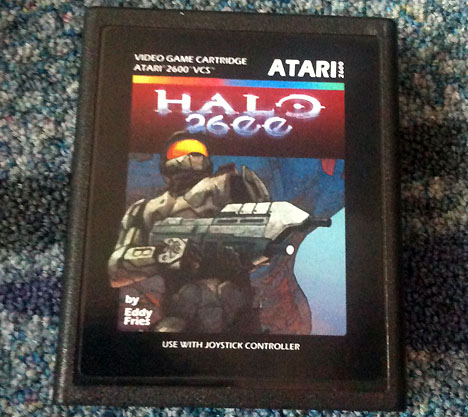
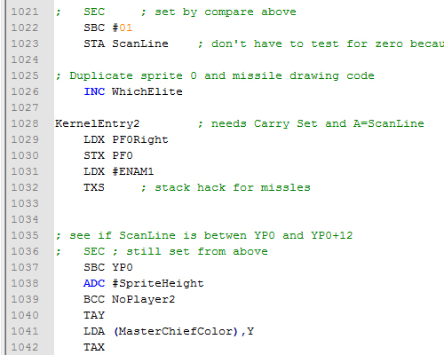

Ed Fries, um veterano da indústria de jogos, criou uma versão do Halo para Atari 2600 e apresentou seu jogo na Classic Gaming Expo, em 2010. No evento, Ed vendeu alguns cartuchos limitados com seu jogo e depois publicou gratuitamente na internet para ser rodado em emuladores de atari ou gravado em curtuchos, como o Harmony Cartridge.
Você já imaginou como é desenvolver um jogo para um hardware muito antigo, utilizando programação Assembler e apenas 4KB de memória? Eu também não tinha muita noção, até ver o código fonte desse jogo, que foi publicado neste ano, um ano após sua apresentação na Classic Gaming Expo.
Cartucho do Halo 2600 vendido na Classic Gaming ExpoO código fonte, disponível aqui, é um arquivo único com extensão ASM, que pode ser aberto em editores como o Notepad++ (alias, indispensável para programadores!). Para quem está acostumado com linguagens de programação como C/C++, C# e Java, esse código vai parecer muito estranho. É uns script com 3580 linhas que contém um jogo capaz de rodar em um Atari 2600, incrível não?
Trecho do código fonteNão se preocupe se o código parecer confuso, eu precisaria pesquisar várias instruções para poder entender bem este código. Hoje em dia acho muito difícil alguém querer fazer jogos para Atari, embora seja desafiador. Acho que no futuro eu tentaria fazer um Hello World para rodar em um emulador, só para ver como funciona. Se você está aprendendo a desenvolver jogos, não recomendo tentar fazer um jogo assim. Vale mais a pena estudar bastante as tecnologias mais novas, e depois dar uma olhada nisso por curiosidade.
Fase inicial do Halo 2600Você pode jogar também a versão em flash do Halo 2600 disponível aqui. Recomendo, pois é muito divertido. Ed conseguiu simplificar Halo o bastante para colocar em um jogo de Atari, bem como balancear a dificuldade do jogo e deixá-lo parecido com os jogos da época. Um trabalho respeitável e muito bem feito.